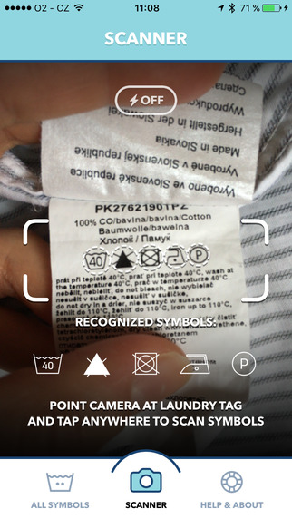

It is week #257. 257 is the country code of Burundi. It is also a Prime number meaning it can only be divisible by 1 and itself. We also share this weeknote name with a large main belt asteroid called 257 Silesia. It is roughly 73km in size and named around the regions of its discoverer’s birthplace.
This week was partly spent looking at venues. We’re helping to organise a small conference here later this year. Our first step was scouting out venues and locking down some dates and potential speakers. So far, so good. We’ve now have a short-list of places and getting the final price quotes and requirements for our budget. Hopefully, in the next week or so we can announce a bit more.
This is an interesting app for your smart phone. You scan your laundry and explains how to wash them based on the icons used to explain how to wash them. It seems a bit redundant, but the fact that this app exists should tell you that the iconography that was suppose to make washing universal and easy, doesn’t.
Looking into this, the Laundry Labels, or Care Tags were developed from an organisation which was formed in 01963. This is certainly not a new idea. Somewhere along the line, it has taken-off for manufacturers of garments, but is still too opaque for the end customer; me and you.
We can laugh at this app. Ha, you don’t know how to wash your cloths, but at the same time, if the app is selling, that should tell you people don’t know how to wash their cloths properly.
I always remember and try to remind myself, when I, a customer or anyone says “I’m too stupid to know how XYZ works”, I try to push back and say, “You’re not stupid, this is just really badly designed”. Never blame yourself or anyone else for not understanding, that is the job the designer and in this case, the market has shown it wasn’t very well done.
David Bowie
The passing of David Bowie is a sad event. Such an influence on so many different aspects of music, internet, culture and more. He has been immortalised on the Brixton 10 pound note. This is an alternative currency which is used in Brixton and features local heros. A few years ago, they moved to a digital currency as well as a physical paper note. This is interesting for so many reasons.
In the US, alternative paper currencies are not legal. The US mint is the only one allowed to create legal tender. That hasn’t stopped organisations from offering “Disney dollars” or other currencies that are only redeemable within that organisation. The grey area is when a bunch of companies or a whole area also agrees to accept this new currency. Shopping malls have gift cards good for any shop inside their walls, downtown retailers form similar groups and offer gift cards. The brixton pound is no different.
But then, why even have the paper money anyway. It is forgeable, counterfitable and open to abuse. Moving to a digital currency means it is trackable, less likely to be forged and then you can argue if it is a currency at all? It is really just a bunch of bits moving around updating ledgers, an abstract barter system.